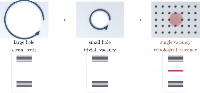

Advanced Quantum Materials 2027 · All lectures · Lecture notes
Session 9. Excitations and Defects in Quantum Materials
9.8 Impurities as diagnostics III, vacancies in topological matter
The strongest local impurity that is possible is a vacancy, where we remove a site completely, which is the same as sending its onsite potential to infinity. Here the bulk-boundary correspondence that we built in sessions 3 and 4 gives a direct result. This correspondence includes the Chern number, the Zak phase, and the guarantee of gapless modes at any boundary of a topologically non-trivial phase. It is known that topological boundary modes survive around a large hole cut into a topological material. If we make that hole smaller, down to a single missing site, the argument still works. A vacancy is in practice a boundary of zero size, and the bulk-boundary correspondence still applies. When the bulk has a non-trivial topological invariant, a vacancy is guaranteed to host an in-gap bound state, as long as the vacancy itself preserves the symmetry that protects that invariant.
This gives a useful diagnostic, because a fully gapped bulk spectrum alone cannot distinguish a topological phase from a trivial one. Let us take a chiral, spin-triplet topological superconductor, which is the class that we studied with Majorana modes and the Chern-number classification in session 5. Without impurities, its bulk spectrum is fully gapped, and by itself it looks the same as the spectrum of a trivial s-wave superconductor. But a vacancy is a non-magnetic perturbation. It is a local change of the potential that does not distinguish spin, even in the extreme limit where the local potential diverges, so it does not change the topological invariant of the bulk, and once we add it, an in-gap mode appears. The same logic holds for a Chern insulator. A vacancy in a system with a finite Chern number gives an in-gap mode, while the same vacancy in a topologically trivial insulator gives no such mode. In both cases the observable signature is the same and easy to read, which is that if introducing vacancies produces in-gap modes, the underlying phase is topological, and if it does not, the phase is trivial, regardless of what the clean bulk spectrum alone would tell us. Figure 9.4 draws both the geometric argument, where a hole becomes smaller down to a single site, and the three spectra that make the diagnostic possible to use.

Notebook check-in: session9.ipynb, “Non-magnetic impurities in a topological superconductor” (Challenge), “DOS of non-magnetic impurities in a topological superconductor” (Challenge), “Single vacancy in a topological superconductor” (Challenge), “Vacancies in a topological insulator” (Challenge), and “Single vacancy in a topological insulator” (Challenge)
Build a chiral p-wave superconductor and a Chern insulator of the Haldane model, each with a single vacancy, and check that the in-gap mode appears in both. The check that the notebook itself suggests is a good one. Change the pairing symmetry to conventional s-wave, or change the topological gap to a trivial gap from a sublattice imbalance, and look at how the in-gap mode disappears. It disappears because the bulk invariant, which guaranteed the mode through the bulk-boundary correspondence, is now zero.